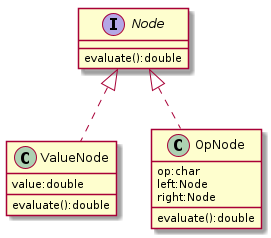

Most
ifs can be replaced with polymorphism.
ifs?ifs are easier to read and reason aboutifs are easier to test, as there is only one execution per code>,<,==,!=if free?null or "nullable" types (php feature)Instead of returning
nullyou can return "null object"
When you have a conditional that chooses a different behaviour based on a type of an object, then move each leg of conditional into an overriding method of a subclass and make the original method abstract.
Your task is to model this expression as object:
Such tree structure would be used to represent particular expression.
Then "evaluate" and "toString" methods will be implemented.
<?php
class Node {
protected string $operator;
protected float $value;
protected ?Node $left;
protected ?Node $right;
public function evaluate(): float {
switch ($this->operator) {
case '#': return $this->value;
case '+': return $this->left->evaluate() + $this->right->evaluate();
case '*': return $this->left->evaluate() * $this->right->evaluate();
}
}
}
Main problems with such careless implementation:
toString method (once implemented) would have to mimic this case statement (code duplication)case statements would require that updateAnalyzing attribute usage:
left, right and operator are only usedvalue attribute is used
# + * operator y y value y left y y right y y This table gives us a feeling that some kind of polymorphic behaviour is happening, and it is happening through fields and
ifstatements instead of polymorphism.
Break them up:
Now the behaviour of object is determined based on it's type - as it should be.
See how simple is evaluate method implementation on value node has become.
<?php
class ValueNode implements Node {
// ..
public function evaluate(): float {
return $this->value;
}
}
evaluate method on operation node is now a bit simpler too.
<?php
class OpNode implements Node {
// ..
public function evaluate(): float {
switch ($this->operator) {
case '+': return $this->left->evaluate() + $this->right->evaluate();
case '*': return $this->left->evaluate() * $this->right->evaluate();
}
}
}
What else just changed?
null values in left and right properties in operation nodesvalue property in operation nodeBut still there is that case statement.
Think about how you would extend this - each time you add a new operator,
toStringmethod will have to mimicevaluatemethod still.
For this reason we break up operation node more.
<?php
abstract class OpNode implements Node {
protected Node $left;
protected Node $right;
}
class AdditionNode extends OpNode {
public function evaluate(): float {
return $this->left->evaluate() + $this->right->evaluate();
}
}
class MultiplicationNode extends OpNode {
public function evaluate(): float {
return $this->left->evaluate() * $this->right->evaluate();
}
}
Now there can be no null pointer exceptions. Code is now more organized. There is less clutter. There is less cognitive load. Maintainability and readability has improved. Easy to introduce
toStringmethod into this system. Easy to introduce new%operator (open/close principle). It is now easier to write tests for this system.
When based on a state outside this object (i.e. some global constant), object should behave a bit differently. How to re-factor?
Here an Update object represents the update of some sort.
And there is global flag FLAG_i18n_ENABLED that determines if
internationalization is enabled or not.
<?php
class Update {
public function execute() {
if (FLAG_i18n_ENABLED) {
// Do A
} else {
// Do B
}
}
public function render() {
if (FLAG_i18n_ENABLED) {
// return A
} else {
// return B
}
}
}
Notice the repeated conditional, seems like a maintenance burden. Bugs will appear if someone is not careful enough. Rather choose this implementation:
<?php
interface Update {
public function execute();
public function render();
}
class I18NUpdate implements Update {
public function execute() {
// Do A
}
public function render() {
// return A
}
}
class NonI18NUpdate implements Update {
public function execute() {
// Do B
}
public function render() {
// return B
}
}
Keep your
ifs closer to the edge of application.
Actually the if statement here did not disappear!
It got moved!
Because once you need to consume an Update
then you still need to decide which version to use.
Someone else is responsible for instantiating the correct
object, and the consumer does not care if it got passed as an
i18n or noni18n version.
<?php
class Factory {
public static function update(): Update {
return FLAG_i18n_ENABLED
? new I18NUpdate()
: new NonI18NUpdate();
}
}
class Consumer {
public function process(Update $update) {
$update->execute();
}
}
This leads us back to the good old dependency injection.
Keep two piles of objects:
- pile of objects that does business logic and domain abstractions
- pile of objects that is construction responsible for building object graphs
So the factory then decides to instantiate international version.
Now also we will not have to make the same decision over and over again in cases when this code runs in some tight loop.
By just wiring up objects differently you can change the behaviour of application.
<?php
interface Connection {
public function write(string $txt);
}
class App {
protected Connection $connection;
public function notify(string $message) {
$this->connection->write($message);
}
}
$app = new App(new UnixConnection);
When you see a
casestatement - it usually is a pretty good indicator that polymorphism begs to be there. Try to write a project withoutifs. It should be good experience. Meanwhile, try staying pragmatic.